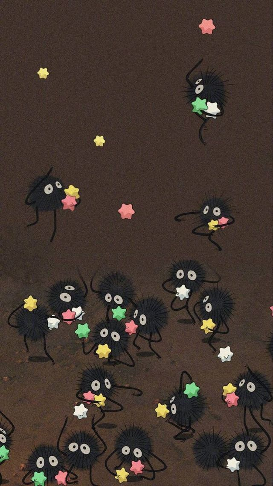

Conheça um pouco da história dessa incrivel animação!!
Lançado em 16 de abril de 1988 e chegou ao Brasil em 8 de março de 1995, “Meu Amigo Totoro”, também conhecido como “Meu vizinho Totoro”, é um filme de animação japonesa de aventura e fantasia produzido pelo Studio Ghibli, com roteiro e direção de Hayao Miyazaki. O filme conta a história de duas crianças que se mudam com o pai, um professor, para uma cidade rural internada. A trama descreve a vida de uma família, tendo como protagonistas duas irmãs, Satsuki e Mei, essas duas garotinhas vivem aventuras imaginárias baseadas no folclore japonês, enquanto presenciam a ausência da mãe por motivo de doença e as saídas do pai por ser o provedor familiar. Além disso, evidencia a vida em comunidade como um aspecto da cultura local. O longa se inicia com a chegada do pai, cujo nome é Tatsuo Kusakabe e suas filhas, ainda crianças, que se mudam para uma região rural do Japão com intuito de estabelecerem com mais proximidade do hospital em que a mãe e esposa está internada com uma doença que fica em suspense no filme sem ser revelada. Um adendo, essa situação da doença da mãe pode ser vista como um fato vivenciado pelo Miyazaki em sua infância, quando sua mãe foi diagnosticada com tuberculose começando assim um tratamento que durou várias décadas. Enquanto se acostumam com o novo lar, com a falta da mãe, a senhora Yasuko, com as dúvidas e inseguranças, que se agravam com o passar dos dias, as meninas vivenciam as novidades da nova casa e seus derredores. Estabelecendo, assim, amizades com criaturas mágicas (fantasias ou recursos de ajustes psicológicos que favoreceram o amenizar das frustrações e dores vividas) que habitam nas matas, incluindo o enorme e carinhoso Totoro.
Clique aqui e conheça um pouco do Studio Ghibli ➤